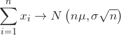
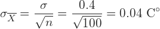
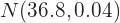

Si una población tiene media y desviación típica, y tomamos muestras de tamaño n con n >30 (ó cualquier tamaño si la población es "normal"), la media de estas muestras siguen aproximadamente una distribución normal dada por:
Permite averiguar la probabilidad de que la media de una muestra concreta esté en un cierto intervalo.
Permite calcular la probabilidad de que la suma de los elementos de una muestra esté, a priori, en un cierto intervalo.
Inferir la media de la población a partir de una muestra.
La población de las temperaturas corporales de adultos sanos tiene media y desviación típica de . Si obtenemos una muestra de 100 personas. ¿Cuál es la probabilidad de que la media de la temperatura de la muestra sea menor o igual a ?
1. Calcular la distribución normal a la que se aproxima la media
Dado que la muestra es grande podemos aplicar el teorema del límite central. Por lo tanto, la media de la muestra se aproxima a una distribución normal con los parámetros
Esto es
2. Aproximar la probabilidad usando la distribución normal obtenida
Calculamos la probabilidad de obtener una temperatura menor o igual a . Para ello, calculamos el valor equivalente en la variable normal tipificada
a. Si las tabletas se empaquetan en lotes de 25, ¿cuál es la probabilidad de que el peso medio de las tabletas de un lote se encuentre entre 124 y 126 gramos?
b. Si los lotes fueran de 64 tabletas, ¿cuál sería la probabilidad de que el peso medio de las tabletas del lote superase los 124 gramos?